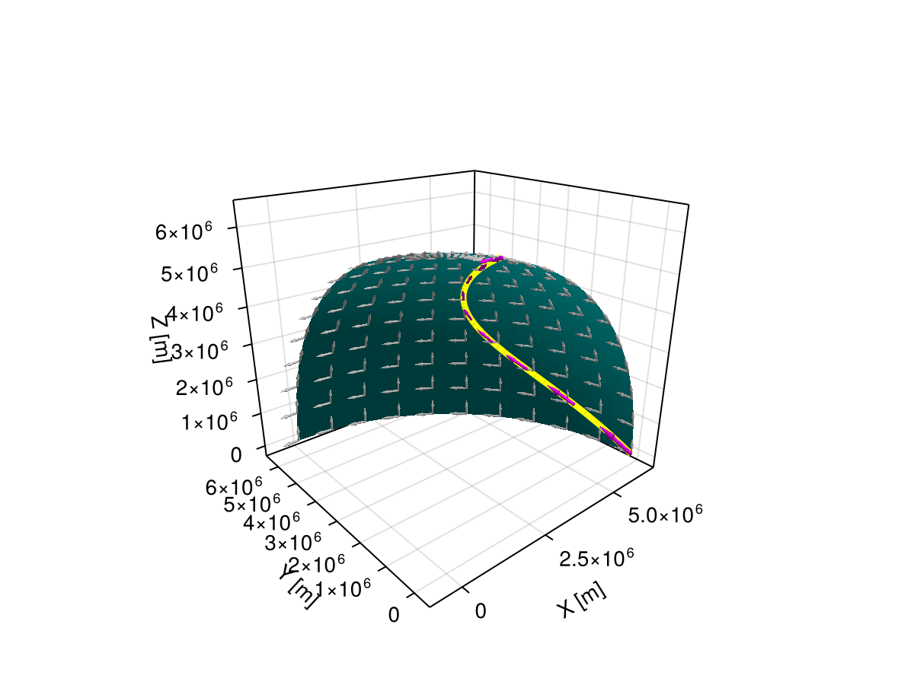

Calculus
Calculus with geometries is possible thanks to careful parametrizations and high-level interfaces such as DifferentiationInterface.jl and IntegrationInterface.jl.
Consider the following quadrangle for illustration purposes:
q = Quadrangle((0, 0, 0), (2, 0, 0), (2, 1, 0), (0, 1, 0))Quadrangle
├─ Point(x: 0.0 m, y: 0.0 m, z: 0.0 m)
├─ Point(x: 2.0 m, y: 0.0 m, z: 0.0 m)
├─ Point(x: 2.0 m, y: 1.0 m, z: 0.0 m)
└─ Point(x: 0.0 m, y: 1.0 m, z: 0.0 m)Differentiation
Meshes.derivative — Function
derivative(geom, uvw, j; dbackend)Calculate the derivative of the geometry's parametric function at parametric coordinates uvw and along j-th coordinate using a differentiation dbackend from DifferentiationInterface.jl. By default, performs automatic differentation with ForwardDiff.jl.
# derivative at center point along first axis
derivative(q, (0.5, 0.5), 1)Vec(2.0 m, 0.0 m, 0.0 m)Meshes.jacobian — Function
jacobian(geom, uvw; dbackend)Calculate the Jacobian of the geometry's parametric function at parametric coordinates uvw using a differentiation dbackend from DifferentiationInterface.jl. Returns a tuple of vectors, each corresponding to the derivative along a parametric coordinate. By default, performs automatic differentation with ForwardDiff.jl.
# Jacobian at center (i.e., derivative along both axes)
jacobian(q, (0.5, 0.5))(Vec(2.0 m, 0.0 m, 0.0 m), Vec(0.0 m, 1.0 m, 0.0 m))Meshes.differential — Function
differential(geom, uvw; dbackend)Calculate the differential element (length, area, volume, etc.) of the geometry at parametric coordinates uvw using a differentiation dbackend from DifferentiationInterface.jl. By default, performs automatic differentation with ForwardDiff.jl.
# differential element (i.e., infinitesimal area)
differential(q, (0.5, 0.5))2.0 m^2Integration
Meshes.integral — Function
integral(fun, geom; ibackend, dbackend)Calculate the integral over the geometry of the function that maps Points to values in a linear space using an integration ibackend from IntegrationInterface.jl and a differentiation dbackend from DifferentiationInterface.jl.
integral(fun, dom; ibackend, dbackend)Alternatively, calculate the integral over the domain (e.g., mesh) by summing the integrals for each constituent geometry.
By default, performs automatic differentation with ForwardDiff.jl and h-adaptive integration with HAdaptiveIntegration.jl for good accuracy across a wide range of geometries.
See also localintegral.
# integral of constant 1 over quadrangle gives area
integral(p -> 1, q)2.0 m^2# unitful integrand is also supported
integral(p -> 1u"W/m^2", q)2.0 W# less trivial integrand in terms of Cartesian coordinates
integral(q) do p
x, y, z = to(p)
x + 2y + 3z # meter units
end3.9999999999999996 m^3Meshes.localintegral — Function
localintegral(fun, geom; ibackend, dbackend)Calculate the integral over the geometry of the function that maps parametric coordinates uvw to values in a linear space using an integration ibackend from IntegrationInterface.jl and a differentiation dbackend from DifferentiationInterface.jl.
By default, performs automatic differentation with ForwardDiff.jl and h-adaptive integration with HAdaptiveIntegration.jl for good accuracy across a wide range of geometries.
See also integral.
# local integral in terms of parametric coordinates in [0, 1]²
localintegral((u, v) -> u^2 + 3v, q)3.666666666666666 m^2All these methods are implemented for curved geometries (e.g., spherical geometry):
# curved quadrangle over the globe
q = Quadrangle(Point(LatLon(0, 0)), Point(LatLon(0, 90)), Point(LatLon(80, 90)), Point(LatLon(80, 0)))
# Jacobian components as rays over the quadrangle
uv = Iterators.product(0:0.1:1, 0:0.1:1)
rs = [Ray.(q(u, v), 0.05 .* jacobian(q, (u, v))) for (u, v) in uv]
# split rays into u and v components
rᵤ = first.(rs) |> vec
rᵥ = last.(rs) |> vec
viz(q, color="teal")
viz!(rᵤ, color="gray80")
viz!(rᵥ, color="gray80")
# Bezier curve over the globe
c = BezierCurve(Point(LatLon(0, 0)), Point(LatLon(40, 90)), Point(LatLon(80, 0)))
# Jacobian components as rays over the curve
ts = 0:0.1:1
rs = [Ray.(c(t), 0.05 .* jacobian(c, (t,))) for t in ts]
# extract t component
rₜ = first.(rs) |> vec
viz!(c, color="yellow", segmentsize=4)
viz!(rₜ, color="magenta")
Mke.current_figure()